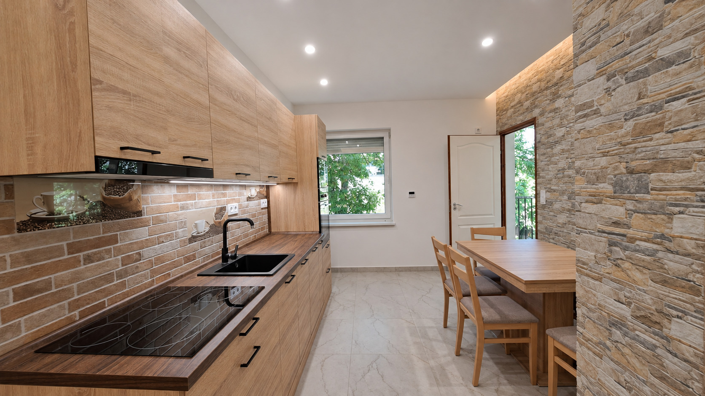
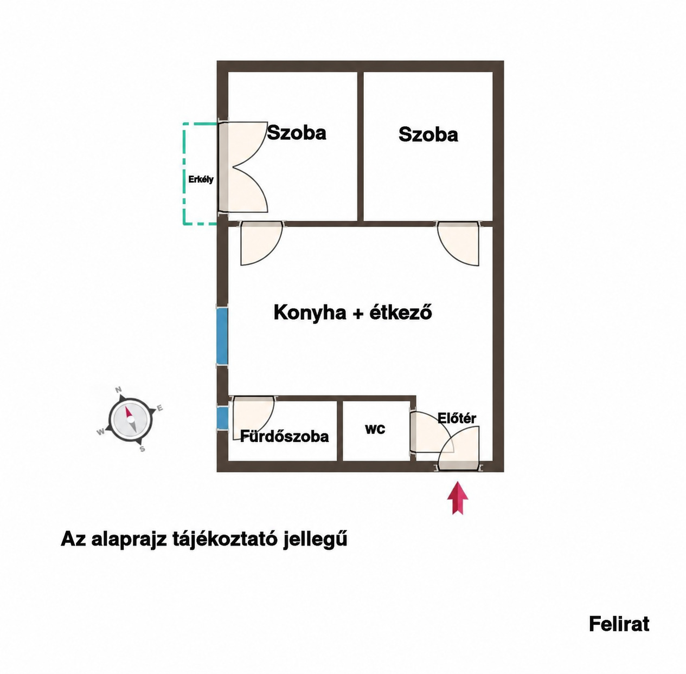

Fotófilm
A fotófilm előkészítés alatt.
KOMLÓ · TOMPA MIHÁLY UTCA
Konyha és étkező egy térben, külön háló, egy sokféleképpen használható kis helyiség. Ismerd meg a 34 m²-es lakást képeken és térben.

01 / NÉZZ KÖRÜL
A konyha fa felületei, az étkező kőburkolata és a külön helyiségek. A fotók a saját lakás tereit és külön jelölve a társasház környezetét mutatják. A képek MI-vel retusált változatok; a kisebb képi részletek eltérhetnek az eredetitől.
02 / MOZGÁSBAN
A fotófilm a forrásképeken vezet végig. A 3D-film a szemléltető modellben mutatja meg a helyiségek kapcsolatát.
A fotófilm előkészítés alatt.
A 3D-film előkészítés alatt.
03 / SAJÁT NÉZŐPONTBÓL
Forgasd el a teljes modellt, vagy lépj be szemmagasságban. A falakat egy gombbal elrejtheted és visszakapcsolhatod.
KOMLÓ · 34 M²
Az interaktív modell csak indításkor töltődik be.
Az áttekintésben alacsonyított falak segítik a tájékozódást. Fotók és tájékoztató alaprajz alapján készült szemléltetés. A méretek és a rejtett részletek becslések. A belső ajtólapokat az áttekinthetőség érdekében elhagytuk; a nyílások megmaradnak.
04 / A TEREK KAPCSOLATA
A hirdetés szerint a konyha–étkező mellett hálószoba és külön, dolgozóként, gardróbként vagy tárolóként használható helyiség található. A fürdő és a WC külön nyílik.
Az alaprajz tájékoztató jellegű. Nem tartalmaz igazolt méretláncot; a modell nem helyettesít felmérést.
Alaprajz megnyitása ↗
A HIRDETÉS ADATAI
Elektromos padlófűtés és hűtő-fűtő klíma; a hirdetés szerint megújult víz- és villanyvezetékek, új nyílászárók redőnnyel és szúnyoghálóval. A konyhában beépített sütő, főzőlap, mikrohullámú sütő és mosogatógép szerepel.
A 34 m² és a 29,9 millió Ft a 2026. november 7-i hirdetés közlése. Az emelet és a pontos belméretek nem igazoltak; ezeket nem egészítettük ki feltételezéssel.